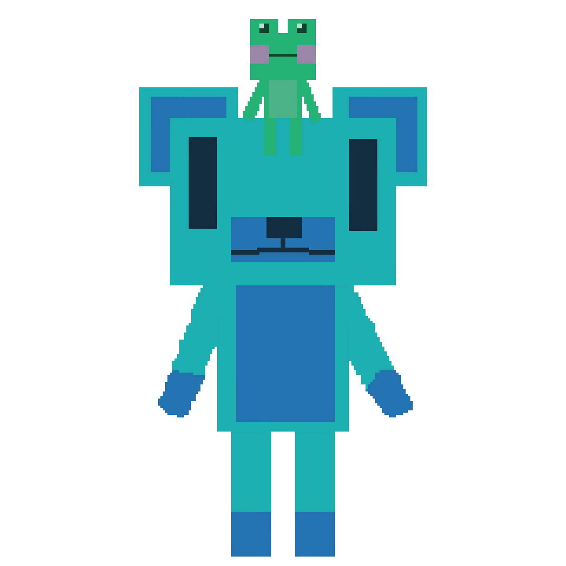
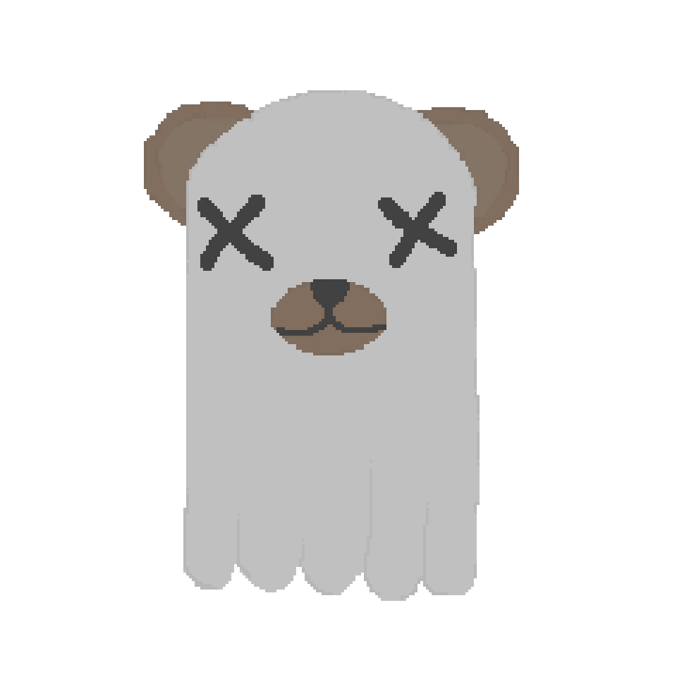
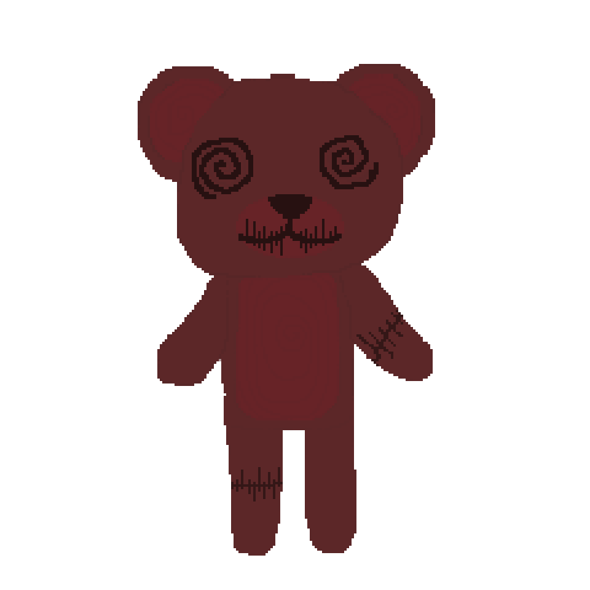

characters
box

Box is a good detective. She is great at finding missing items and exploring the unknown.
Box likes square and cubed shape stuff.
Gifting her something that is a square will automatically make you, her friend.
Box can’t speak. She speaks through actions and her frog friend helps her out too.
Box is not very good at staying in one place for a long time.
She likes the excitement of adventure and learning.

Patches

Patches is very shy and prefers to be alone.
If you see them in a graveyard, they are lonely and it's best to give them a nice flower and keep them company for a bit.
They can sense if you are a good person and can talk to anyone from your past as a way to show their kindness to you.
When in bad situations Patches goes invisible and moves to a dark place to hide away.
Buttons

Button’s expression never changes.
Behind his intense blank stare is an extensive knowledge from seeing into thoughts and memories.
He endures in pain with all the knowledge he has learnt.
Buttons is immortal.
He likes to make friends and when you are friends with Buttons, you are friends until you die.
When Buttons is comfortable with you, he will talk a lot more.
He also likes to give and receive hugs as comfort.
Faceless Bears


Skull Head

Clown Bear